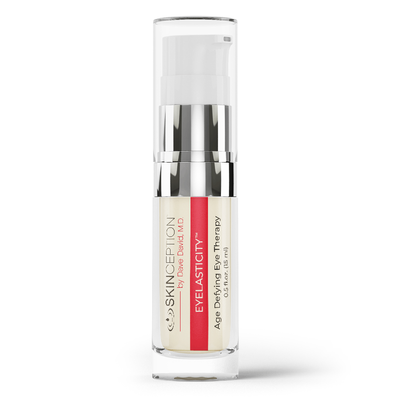
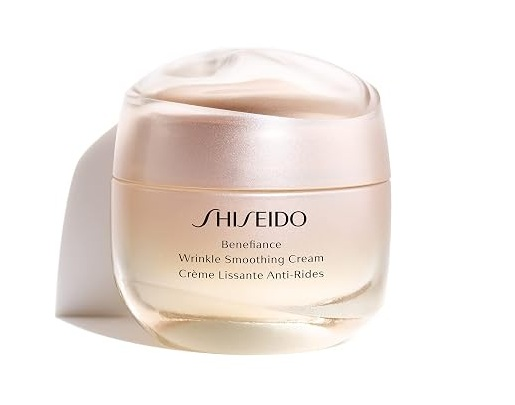

Eyelasticity™ Review: How to Drain Puffy Bags and Erase Dark Circles Without Surgery
By Derm Audit Editorial Team • Updated September 2026 • 6 Min Read
Formulator: Dr. Dave David, M.D. (Cosmetic Surgeon) • Active Peptides: Eyeseryl® (Tetrapeptide-5), Regu®-Age, Syn®-Coll, Pro-Coll-One+ • Clinical Outcomes: 70% under-eye bag reduction in 15 days; 35% dark circle fading • Guarantee: 67 Days • Best For: Chronic morning puffiness, fluid bags, purple vascular shadows, and milia-prone skin.

Why Does Under-Eye Skin Break Down First?
Touch your cheek with your finger. That skin is thick, strong, and durable. It is like a piece of sturdy cardboard.
Now touch the skin right below your lower eyelid. That skin is completely different. It is only 0.5 millimeters thick. That is as thin as a single sheet of wet tissue paper. Because this skin is so thin, it has zero protective fat underneath.
Right behind that thin tissue paper sits a dense web of tiny blood vessels. When you feel tired, stressed, or sick, your blood flow slows down. Red blood cells lose their oxygen and stop moving quickly. They pool together in one spot. When dark, oxygen-starved blood pools behind thin tissue paper, it shows through the skin as a purple, blue, or black shadow. That is the exact biological cause of a dark circle.
🚨 The Heavy Oil Cream Mistake (Milia Cysts):
Many people buy heavy, thick night creams to treat eye bags. This is a severe mistake. Thick creams contain heavy petroleum, mineral oils, and waxes. Under-eye skin has tiny micro-pores that cannot absorb heavy grease. The oil clogs your skin glands and traps dead keratin cells, creating hard, permanent white bumps under your skin called milia. Never put heavy, greasy face creams near your eye contour!
The Science of Puffy Eye Bags: The Leaky Hose Problem
Why do under-eye bags swell up when you wake up in the morning?
Think of your tiny under-eye capillaries like microscopic garden hoses. As you get older, the walls of these hoses get thin and fragile. Tiny micro-cracks form in the vessel walls. Water, salts, and lymphatic fluid leak out through the cracks into the surrounding tissue.
When you sleep flat on your back, gravity stops pulling fluid down toward your feet. The leaked water collects in the hollow space under your eyes like a tiny water balloon. Because your skin drainage system is slow, the fluid stays trapped. The result is a heavy, swollen, saggy eye bag.
How Eyelasticity™ Restores Firm, Bright Eyes in 3 Phases
Developed by board-certified cosmetic surgeon Dr. Dave David, M.D., Eyelasticity™ avoids heavy milia-causing oils. Instead, it uses a lightweight water-gel matrix delivering 4 clinical micro-peptides that work in 3 distinct phases:
- Phase 1: Drain Trapped Fluid (Eyeseryl®) — Stimulates local lymphatic micro-circulation to pump out pooled water and deflate puffy morning bags in 15 days.
- Phase 2: Seal Micro-Capillaries (Regu®-Age) — Strengthens fragile capillary walls so blood moves smoothly and stops pooling behind thin tissue paper, clearing dark circles by up to 35%.
- Phase 3: Thicken Tissue Cushion (Syn®-Coll & Pro-Coll-One+) — Increases collagen synthesis to thicken the under-eye skin layer, hiding dark veins and smoothing fine crow's feet laugh lines.
The 4 Targeted Micro-Peptides
1. Eyeseryl® (Tetrapeptide-5)
The Fluid Drainage Pump: Stops capillary leakage and stimulates lymphatic drainage. Clinically proven to reduce under-eye bag volume in 70% of test subjects within 15 days.
2. Regu®-Age Complex
The Circulation Shield: Purified soy and rice peptides with yeast protein that reinforce fragile capillary walls, reducing dark circles by up to 35% and puffiness by 32%.
3. Syn®-Coll (Tripeptide-5)
The Tissue Thickener: Stimulates natural collagen synthesis via TGF-beta mimicry. Thickens delicate under-eye skin so stagnant veins are completely hidden from sight.
4. Pro-Coll-One+ & Beta-Glucan
The Elasticity Lock: Purified soya glycopeptides boost Type I collagen by 1190% to smooth crow's feet, while oat beta-glucan calms sensitive skin and locks in moisture.
Clinical Matchup: Eyelasticity™ vs. Shiseido Benefiance Eye Cream
| Feature / Specification |
Eyelasticity™
Winner: Top Eye Therapy
|
 Shiseido Benefiance
|
|---|---|---|
| Key Active Mechanism | 4-Peptide Vascular & Drainage Matrix: Eyeseryl® drains pooled fluid, Regu®-Age seals capillaries, Syn®-Coll rebuilds collagen. | Heavy occlusive hydration with squalane, petrolatum, and botanical extracts. |
| Texture & Milia Risk | Zero Milia Risk. Lightweight water-gel serum absorbs completely without clogging micro-pores. | High Milia Risk. Heavy petrolatum and mineral wax base clogs delicate under-eye glands. |
| Clinical Bag Drainage | 70% Reduction in 15 Days (Verified clinical trials with Eyeseryl®). | No targeted lymphatic drainage peptides. |
| Money-Back Guarantee | 67-Day 100% Money-Back Guarantee. | No guarantee on opened luxury jars. |
| Retail Price | $59.95 (Direct manufacturer price) | $65.00 – $74.00 (Luxury retail markup) |
| Best Action | Claim Official Offer | View Shiseido |
What We Love:
- Doctor-formulated by board-certified cosmetic surgeon Dr. Dave David, M.D.
- Rapid 15-day clinical lymphatic drainage (70% bag volume reduction)
- Fades dark vascular circles by up to 35% without bleaching agents
- Lightweight non-comedogenic water-gel eliminates all risk of milia cysts
- Protected by a full 67-day 100% money-back guarantee with zero return hassle
Things to Keep in Mind:
- Must be applied twice daily (morning and evening) on clean skin for best results
- Hereditary deep-bone structural hollows may require dermal fillers for 100% correction
The 60-Day Eye Renewal Timeline
Days 1 – 14
Micro-lymphatic drainage activates. Morning puffiness and fluid swelling decrease significantly within 15 days.
Days 15 – 35
Capillary walls strengthen. Stagnant blue/purple blood pooling clears, fading dark circles by up to 35%.
Days 36 – 60+
Syn-Coll and Pro-Coll-One+ rebuild dense collagen springs, firming delicate under-eye skin and smoothing crow's feet.
Frequently Asked Questions
Will Eyelasticity cause milia (white bumps under the eye)?
No. Unlike thick, greasy night creams packed with heavy petroleum, Eyelasticity is formulated as a lightweight water-based peptide serum. It absorbs within seconds without clogging sensitive eye micro-pores.
Can I apply makeup or sunscreen over Eyelasticity?
Yes. After tapping a pea-sized amount onto the eye contour, allow 60 seconds for full absorption. You can then apply concealer, foundation, or sunscreen smoothly with zero pilling or greasy residue.
How long does one bottle last?
One 0.5 fl oz (15 ml) bottle lasts approximately 30 to 45 days when used twice daily on both eyes.
Ready for Brighter, Tighter, Rejuvenated Eyes?
Experience doctor-formulated peptide therapy with Eyelasticity™ and Skinception's 67-day 100% money-back guarantee.
Visit Official Eyelasticity Store & Claim Offer